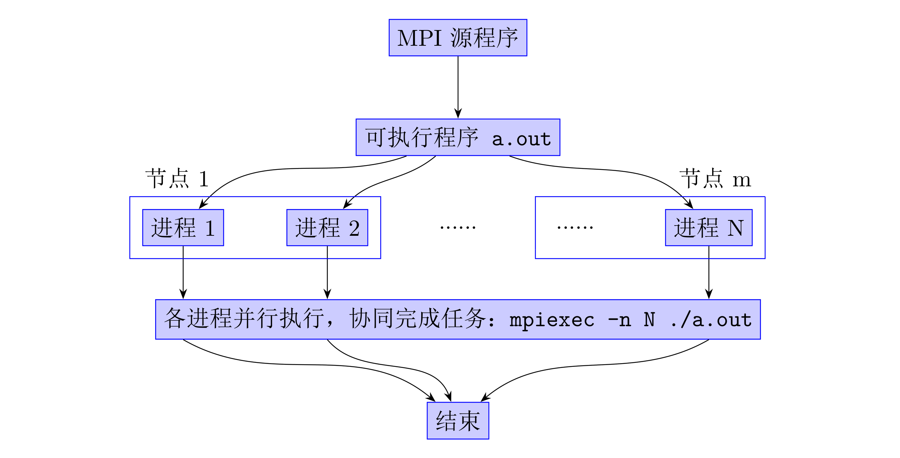
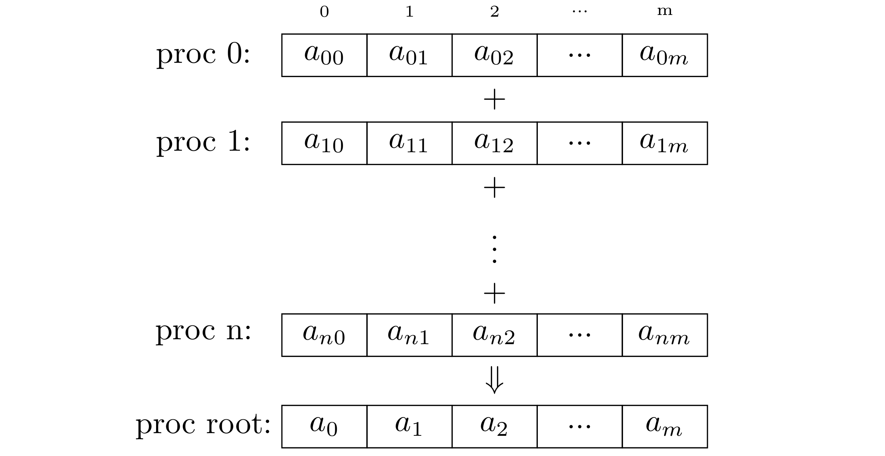

MPI(Message Passing Interface，消息传递编程接口)是由全世界工业、科研和政府部门联合建立的一个消息传递编程标准，其目的是为基于消息传递的并行程序设计提供一个高效的、可扩展的、统一的编程环境。MPI标准定义了一组c和fortran函数接口，用于进程间的消息传递，这组函数的具体实现由各厂商实现。流行的实现有mpich和OpenMPI等，本节代码运行于mpich下，且只介绍c语言接口。
§MPI运行模式

§安装
流行的Linux版本可以直接从软件仓库安装，如
ubuntu: sudo apt install mpich
centos: sudo yum list mpich*, sudo yum install mpichX
mpich等主流mpi实现都不支持windows，在windows上使用mpi，需要安装ms-mpi，从https://github.com/microsoft/Microsoft-MPI/releases下载文件msmpisdk.msi和msmpisetup.exe安装即可。
如果因为某些原因不得不从源代码安装，可以遵循以下流程进行安装(假设无root权限)。
1、从mpich网站下载源代码并传至服务器
$ wget https://www.mpich.org/static/downloads/3.0.4/mpich-3.0.4.tar.gz
$ scp mpich-3.0.4.tar.gz user@remote_ip:/home/user/mpich-3.0.4.tar.gz -P 22
更多版本可以在https://www.mpich.org/downloads/和https://www.mpich.org/static/downloads/找到。
2、解压缩
$ tar -xf mpich-3.0.4.tar.gz
3、编译
$ mkdir mpich
$ cd mpich-3.0.4
$ ./configure --prefix=/home/user/mpich/ 2>&1 | tee c.log
$ make 2>&1 | tee m.log
$ make install 2>&1 | tee mi.log
4、加入环境变量。编辑~/.bashrc，修改或者添加以下行：
|
|
编译过程可以参考：https://www.mpich.org/static/downloads/3.3.2/mpich-3.3.2-installguide.pdf.
§集群配置
§节点情况
假定一个集群中有4个节点，每个节点配置一个内部通信用的静态ip地址，且每个节点至少有一个别名。/etc/hosts文件如下：
127.0.0.1 localhost
21.21.21.1 node1 gpunode1
21.21.21.2 node2 gpunode2
21.21.21.3 node3 gpunode3
21.21.21.4 node4 gpunode4
各个节点之前是否互通可以通过ping来测试：
$ ping node2 -c 4
PING node2 (21.21.21.2) 56(84) bytes of data.
64 bytes from node2 (21.21.21.2): icmp_seq=1 ttl=64 time=0.181 ms
64 bytes from node2 (21.21.21.2): icmp_seq=2 ttl=64 time=0.181 ms
64 bytes from node2 (21.21.21.2): icmp_seq=3 ttl=64 time=0.162 ms
64 bytes from node2 (21.21.21.2): icmp_seq=4 ttl=64 time=0.185 ms
--- node2 ping statistics ---
4 packets transmitted, 4 received, 0% packet loss, time 2999ms
rtt min/avg/max/mdev = 0.162/0.177/0.185/0.013 ms
首先每个节点都需要有自己能访问的用户，此处假定4个节点上的用户名都为user。
§免密登录
切换节点可以用ssh登录：
user@node1:~$ ssh node2
user@node2's password:
Last login: Tue Jul 21 23:31:08 2020 from node1
user@node2:~$
mpi可以通过ssh进行通信，但必须配置免密登录。ssh的免密登录通过公钥/密钥认证实现。以下介绍步骤。
1、在node1上生成公钥和密钥
user@node1:~$ ssh-keygen -t rsa
Generating public/private rsa key pair.
Enter file in which to save the key (/home/user/.ssh/id_rsa):
Enter passphrase (empty for no passphrase):
Enter same passphrase again:
Your identification has been saved in /home/user/.ssh/id_rsa.
Your public key has been saved in /home/iser/.ssh/id_rsa.pub.
The key fingerprint is:
dc:da:09:df:08:d5:bf:e4:30:22:c1:00:24:20:f9:24 user@node1
The key's randomart image is:
+--[ RSA 2048]----+
|ooo |
|E .. o . |
| + o . . |
| . . + . |
| S o o o |
| B = = . |
| . = . o |
| |
| |
+-----------------+
中途询问路径和密码直接回车即可。生成的公钥和密钥分别存放在文件/home/user/.ssh/id_rsa.pub和/home/user/.ssh/id_rsa中。
2、将node1生成的公钥加入node2、node3、node4的authorized_keys中：
user@node2:~$ mkdir ~/.ssh
user@node2:~$ scp node1:/home/user/.ssh/id_rsa.pub ~/.ssh/authorized_keys
...
3、更改权限
user@node2:~$ chmod 700 ~/.ssh
user@node2:~$ chmod 600 ~/.ssh/authorized_keys
...
此时从node1登录node2、node3、node4不再需要输入密码了。如果仍然不能登录，则检查node2、node3、node4的ssh配置文件/etc/ssh/sshd_config中以下几个选项是否正确：
RSAAuthentication yes # 启用 RSA 认证
PubkeyAuthentication yes # 启用公钥私钥配对认证方式
AuthorizedKeysFile .ssh/authorized_keys # 公钥文件路径
如果不是上述配置则改成上述配置然后重启ssh服务：service ssh restart
如果要从node2等节点免密登录其它节点，按上述流程操作即可。
2020-12-14 更新：可以直接执行ssh-copy-id user@host来将自己的id_rsa.pub加入到host的user用户的.ssh/authorized_keys中，这样就不需要手动更改authorized_keys了。比如要从node1免密登录node2，则在node1上执行ssh-copy-id node2，然后输入密码即可。
§共享目录
我们只在一个节点上编译了mpich，其它节点上也需要安装mpich并配置环境变量，可以将它拷贝过去:
user@node1:~$ scp -r .bashrc mpich node2:/home/user/mpich
除mpich需要每个节点一份以外，每次编译好的可执行文件也需要每个节点都有一份且路径相同，为简单起见，此处使用共享目录进行同步。
注意：设置共享目录必须有root权限！
假定各个节点已经安装了nfs-utils，需要同步的目录为/home/user/workspace，此目录仅存储于node1的磁盘上，遵循以下步骤操作可将此目录挂载至node2、node3、node4：
1、首先编辑node1的/etc/export文件，加入一行：
/home/user/workspace *(rw,sync,root_squash)
其中，
*()：所有主机都可挂载；
rw：read-write，可读写；
sync：同步写入(文件同时写入硬盘和内存)，适用在通信比较频繁且实时性比较高的场合；
root_squash：把客户端root身份的UID/GID(0/0)对应到服务端的nobody用户去，即服务端使用nobody用户来操作共享目录。
2、然后在node1上执行：
root@node1:~# exportfs -rav
exporting *:/home/user/workspace
3、然后在node2、node3、node4上分别执行：
root@node2:~# mkdir /home/user/workspace
root@node2:~# mount -t nfs -o nfsvers=3 node1:/home/user/workspace /home/user/workspace
4、如果node2、node3、node4上未见到共享目录的内容，可以重启nfs服务：
root@node2:~# service nfs restart
§进程数量控制
假设编译出来的可执行文件为/home/user/workspace/a.out。在/home/user/workspace下新建一个名为servers的文本文件，内容如下：
node1:2
node2:2
node3:2
node4:2
然后执行：
|
|
这样就可以使用4个节点共8个进程进行计算。以上操作在任意一个节点上进行都可以，只要此节点可以免密登录其余节点。
注意：此节上述配置仅适用于mpich，如果是openmpi，按照下面的操作进行。
1、在/home/user/workspace/下新建一个文本文件，名为hostfile，内容为：
node1 slots=2
node2 slots=2
node3 slots=2
node4 slots=2
2、执行：
|
|
§进程特点
1、进程与程序相联，程序一旦在操作系统中运行即成为进程。
2、进程拥有独立的执行环境，内存空间彼此不相交。
3、进程间可以相互交换信息。例如数据交换、同步等待，消息是这些交换信息的基本单位，消息传递是实现进程间通信的唯一方式。
§MPI重要概念
1、进程组(process group)：MPI程序的全部进程集合的一个有序子集，且进程组中每个进程被赋于一个在该组中唯一的序号(rank)，用于在该组中标识该进程。序号的取值范围是[0, 进程数-1]。
2、通信器(communicator)：一类进程的集合即一个进程组，且在该进程组，进程间可以相互通信。任何MPI通信函数均必须在某个通信器内发生。MPI系统提供省缺的通信器MPI_COMM_WORLD，所有启动的MPI进程通过调用函数MPI_Init()包含在该通信器内；各进程通过函数MPI_Comm_size()获取通信器包含的(初始启动)的MPI进程个数。
3、进程序号(rank)：用来在一个进程组或通信器中标识一个进程。MPI程序中进程在进程组内有唯一序号，不同进程组内的同一进程可以有不同的序号。
4、消息(message)：分为数据(data)和包装(envelope)两个部分。包装由接收进程序号/发送进程序号、消息标号和通信器三部分组成，数据是用户将要传递的内容。
5、MPI对象：MPI系统内部定义的数据结构，包括数据类型(如MPI_INT)、通信器(MPI_Comm)、通信请求(MPI_Request)等。
6、MPI联接器(handles)：联接MPI对象的具体变量，用户可以通过它访问和参与相应MPI对象的具体操作。例如，MPI系统内部提供的通信器MPI_COMM_WORLD。
§MPI函数形式
MPI的函数名称以MPI_开头，一般形式为：
|
|
除MPI_Wtick和MPI_Wtime外，其它函数的返回值都是整型错误编码，如全局归约函数声明为：
|
|
返回值可能为：MPI_SUCCESS、MPI_ERR_COMM、MPI_ERR_COUNT、MPI_ERR_TYPE、MPI_ERR_BUFFER。标识了MPI_Reduce函数调用过程中可能发生的错误。
§MPI数据类型
MPI的许多函数调用时，需要指定传递的数据类型，MPI的数据类型定义为结构体MPI_Datatype，内置类型见下表:
| MPI_Datatype | 对应c语言类型 |
|---|---|
| MPI_CHAR | char |
| MPI_SHORT | short |
| MPI_INT | int |
| MPI_LONG | long |
| MPI_FLOAT | float |
| MPI_DOUBLE | double |
| MPI_UNSIGNED_CHAR | unsigned char |
| MPI_UNSIGNED_SHORT | unsigned short |
| MPI_UNSIGNED | unsigned int |
| MPI_UNSIGNED_LONG | unsigned long |
| MPI_LONG_LONG_INT | long long |
| MPI_LONG_DOUBLE | long double |
需要注意的是MPI_DOUBLE这样的类型不是真正的类型，而是对象，目的是用来告知MPI操作数的类型，声明变量仍然只能使用对应的c语言类型。
除了这些内置类型，MPI还支持自定义类型，这个功能在后面介绍。
§MPI程序结构
下面是MPI程序的典型结构：
|
|
函数MPI_Init用于初始化MPI系统，在调用其它MPI函数(除MPI_Initialized外)之前必须先调用譔函数。在许多MPI系统中，第一个进程通过MPI_Init来启动其它进程。注意要将命令行参数的地址传递给MPI_Init，因为MPI程序启动时一些初始化参数是通过命令行传递给进程的，这些参数被添加在命令行参数列表中，MPI_Init通过它可以得到MPI程序运行的相关信息。
函数MPI_Comm_size和MPI_Comm_rank分别返回指定通信器中进程的数目和本进程的编号。
函数MPI_Finalize用于退出MPI系统，调用MPI_Finalize之后不能再调用其它MPI函数。
要注意即使是MPI_Init之前的代码，也会被所有进程执行，只是无法使用MPI进行通信，因此要注意资源的分配和数据的一致性。
§例1、计算$\pi$的值--全局归约
通过近似计算定积分$\int_0^1\cfrac{4}{1 + x^2}dx$来计算$\pi$。根据定积分的定义，有： $$ \int_0^1\cfrac{4}{1 + x^2}dx = \lim_{n \rightarrow +\infty} h\sum_{i=0}^{n-1} f(x_i) $$ 其中$h=1/n$为积分步长；$x_i=(i+0.5)h$为区间中点；$f(x)=\cfrac{4}{1 + x^2}$为被积函数。
每个进程计算一部分和，然后进行归约。
|
|
编译：mpicxx pi.cpp -o pi.out
一个进程执行：
|
|
多个进程执行：
|
|
此段代码主要用到的函数为MPI_Reduce，签名为：
|
|
此函数的功能可由下图描述：

MPI_Op为归约操作的二元运算，此处需要将各个进程的结果求和，因此指定为MPI_SUM。可用的操作见下表：
| MPI_Op | 描述 |
|---|---|
| MPI_MAX | 两个操作数中较大的一个 |
| MPI_MIN | 两个操作数中较小的一个 |
| MPI_SUM | 两个操作数之和 |
| MPI_PROD | 两个操作数之积 |
| MPI_LAND | 两个操作数的逻辑与(logical and) |
| MPI_BAND | 两个操作数的按位与(bitwise and) |
| MPI_LOR | 两个操作数的逻辑或(logical or) |
| MPI_BOR | 两个操作数的按位或(bitwise or) |
| MPI_LXOR | 两个操作数的逻辑异或(logical xor) |
| MPI_BXOR | 两个操作数的按位异或(bitwise xor) |
| MPI_MAXLOC | 两对操作数的最大值和最大值的位置(u,i)op(v,j)=(max(u,v),k) |
| MPI_MINLOC | 两对操作数的最小值和最小值的位置(u,i)op(v,j)=(min(u,v),k) |
如果需要的操作没有预定义的MPI_Op，可以通过MPI_Op_create函数定义合适的函数。
count指定数组长度，datatype指定数组的元素类型，root和comm分别指示归约到哪个进程和在哪个进程组内归约。
§文档
[1] https://www.open-mpi.org/doc/current/.
[2] https://www.mpich.org/static/docs/latest/.
[3] https://www.mpi-forum.org/docs/mpi-3.1/mpi31-report.pdf.